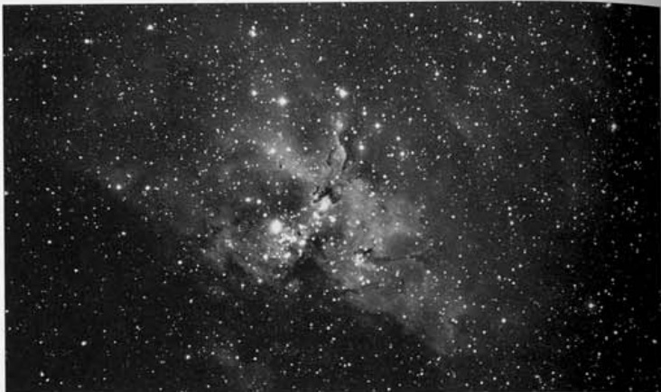
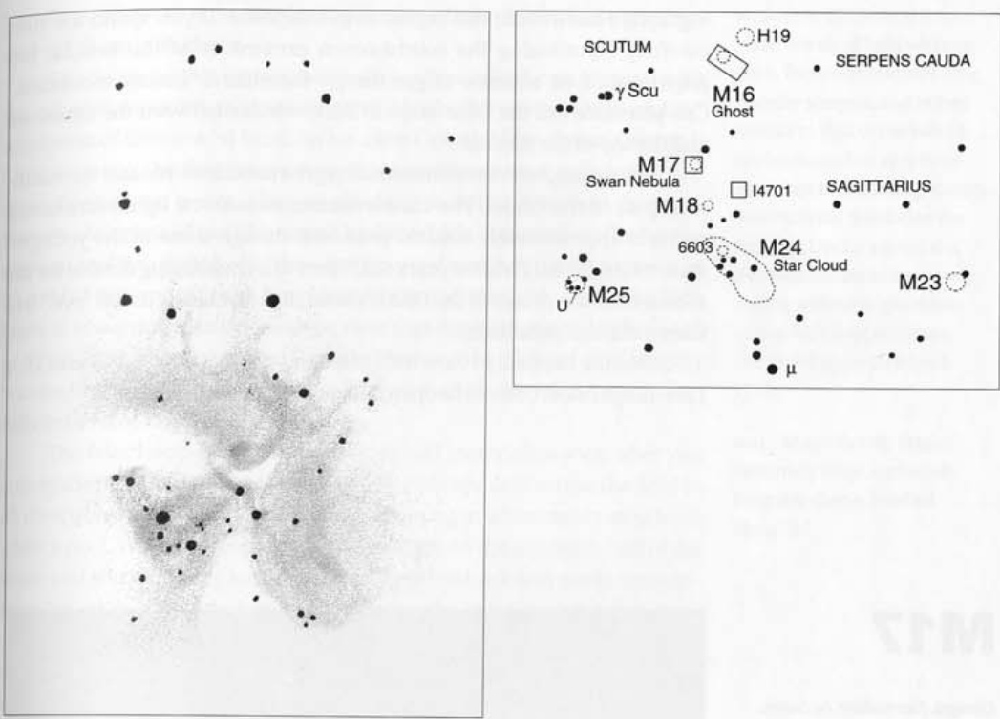

鹰星云 · Eagle Nebula (NGC 6611)
导言 (Introduction)
Located 2% west-northwest of 4.7-magnitude Gamma (γ) Scuti, in the spine of the Milky Way, is a most tantalizing sight—a fan of nebulosity 315 light years in extent (or about 20,000 times the diameter of the solar system) atop a loosely scattered cluster of stars. But as fine as M16 appears through a telescope, the view does not compare with the cornucopia of elaborate detail revealed in photographs made through large telescopes. Burnham, in his book, calls its photographic appearance one of the great masterworks of the heavens.
位于4.7等天箭座伽马星西北偏西方向2%处、银河系脊柱地带的这片星云堪称绝景——长达315光年（约为太阳系直径的2万倍）的扇形星雾笼罩在疏散星团之上。虽然望远镜中的M16星云已足够壮美，但其观感仍无法与大型望远镜拍摄照片所呈现的精细结构相提并论。伯纳姆在其著作中称其影像效果为天穹杰作之一。
梅西耶的发现 (Messier's Discovery)
[Observed 3 June 1764] Cluster of faint stars, mingled with faint luminosity, close to the tail of Serpens, not far from the parallel of in that constellation. With a small telescope this cluster appears to be a nebula.
[观测于1764年6月3日] 由暗淡恒星与微弱辉光交织而成的星团，位于巨蛇座尾部附近，与该星座内某天体近乎同纬度。通过小型望远镜观测，此星团呈现星云状特征。

Philippe Loys de Chéseaux first discovered this celestial wonder in 1746, long before Messier's cataloging. The nebula has since accumulated an enchanting collection of names: the Ghost Nebula, the Eagle Nebula, and the Star Queen Nebula—each moniker capturing a different aspect of its ethereal beauty.
星云结构：星后的王座 (The Star Queen's Throne)
Thrusting boldly into the heart of the cloud rises a huge pinnacle like a cosmic mountain, the celestial throne of the Star Queen herself wonderfully outlined in silhouette against the glowing fire mist.
In the vast reaches of the Universe, modern telescopes reveal many vistas of unearthly beauty and wonder, but none, perhaps, which so perfectly evoke the very essence of celestial vastness and splendor, indefinable strangeness and mystery, the instinctive recognition of a vast cosmic drama being enacted, of a supreme masterwork of art being shown.
勇猛地刺入星云心脏的是一座巨大的尖峰，宛若宇宙山脉——星后的天界王座在发光的火焰雾霭映衬下，轮廓奇妙地显现出剪影……在浩瀚宇宙中，现代望远镜揭示了无数超凡美景与奇观，但或许没有哪处景象能如此完美地唤起人们对宇宙广袤与辉煌、难以言喻的奇异与神秘的直觉感知，让人本能地意识到正在上演的宏大宇宙戏剧，正在展示的至高艺术杰作。

创生之柱：恒星的摇篮 (The Pillars of Creation: Cradles of Stars)
At the center of the nebula, a stalagmite of blackness 20 trillion miles long to the northeast, and a wedge of darkness to the north together create one of the most mystifying sights visible in galactic nebulae—tidal waves of dark matter that appear to be scrubbing away the bright coast of gas with their heavy ebb and flow.
星云中心，一根长达二十万亿英里的黑色石笋向东北方延伸，而北面的一片楔形暗域共同构成了银河星云中最令人费解的景象——暗物质的潮汐波动以其剧烈的涨落冲刷着明亮的气体海岸。
Earlier this century, astronomer Fred Hoyle believed that we were witnessing the expansion of hot gas into cooler gas, with the hot gas erupting like an exploding bomb. And that is largely what recent images from the Hubble Space Telescope have revealed: ebony pillars trillions of miles long dramatically being boiled away by the ultraviolet radiation of nearby stars.
本世纪初，天文学家弗雷德·霍伊尔曾认为我们观测到的是高温气体向低温气体膨胀的过程，炽热气体如同爆炸的炸弹般喷发。近期哈勃太空望远镜传回的图像基本印证了这一观点：长达数万亿英里的乌木状气柱正被邻近恒星的紫外线辐射剧烈蒸发。
Shooting off the column tips are tapered nodules of gas (EGGs—Evaporating Gas Globules), each as wide as our solar system, where star formation is occurring. These structures, immortalized by the Hubble Space Telescope as the iconic "Pillars of Creation," represent the very moment of stellar birth frozen in cosmic time.
从柱状结构顶端喷射而出的是锥形气体结节（EGGs，即"蒸发中的气体球状体"），每个结节宽度相当于整个太阳系，那里正在发生恒星形成过程。这些被哈勃太空望远镜永久定格的"创生之柱"结构，正在宇宙时间中冻结着恒星诞生的永恒瞬间。
幽灵现形 (The Ghost Revealed)
Visible as a hazy patch with the naked eye, the M16 complex occupies the northern end of a large S-shaped asterism of stars, which, if viewed together at 23× with north up, looks very much like a seahorse. In fact, this nebula more resembles a cartoon-like ghost flying through the night with outstretched arms and bulging eyes (thus my nickname "the Ghost" for the nebulosity).
肉眼可见的朦胧光斑——M16复合星云，位于一个大型S形星群北端。若以23倍放大率正北朝上观测，其星群组合形似海马。实际上，这片星云更似卡通鬼魅：舒展双臂瞪圆双眼的幽灵夜巡（故我称其"幽灵星云"）。
基本参数 (Specifications)
| 参数 / Parameter | 值 / Value |
|---|---|
| 类型 / Type | 疏散星团与发射星云 / Open Cluster and Emission Nebula |
| 星座 / Constellation | 巨蛇座（尾部）/ Serpens (Cauda) |
| 赤经 / RA | 18h 18m.8（星团） |
| 赤纬 / Dec | -13° 48′（星团） |
| 星等 / Magnitude | 6.0（星团） |
| 视直径 / Apparent Dimensions | 120′ × 25′（星云）/ 6′（星团） |
| 距离 / Distance | 9,000 光年 / Light Years |
| 发现者 / Discoverer | 菲利普·卢瓦·德谢索 (1746) / Philippe Loys de Chéseaux |
观测体验 (Observing Experience)
The Ghost and its associated dark clouds are an extreme visual challenge in small telescopes, unlike the dark channels and swirls so clearly visible in M8. Do take up the challenge, however.
幽灵星云及其伴生的暗云是小型
🔒 受限于篇幅，本文仅展示部分样章。O'Meara 先生完整的观测手记、实测数据及未公开的独家配图，请参阅原著双语典藏版。
👉 立即在闲鱼获取《DEEP-SKY COMPANIONS》中英双语高清典藏版